정보처리기사(구) (2010-03-07 기출문제)
1과목: 데이터 베이스
1. 스키마의 종류 중 다음 설명에 해당하는 것은?
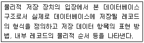
- 외부 스키마
- 내부 스키마
- 개념 스키마
- 슈퍼 스키마
(정답률: 78%)

2. 뷰(VIEW)에 대한 설명으로 옳지 않은 것은?
- 뷰 위에 또 다른 뷰를 정의할 수 있다.
- DBA는 보안 측면에서 뷰를 활용할 수 있다.
- 뷰의 정의는 ALTER문을 이용하여 변경할 수 없다.
- SQL을 사용하면 뷰에 대한 삽입, 갱신, 삭제 연산시 제약사항이 따르지 않는다.
(정답률: 77%)
3. 데이터 모델의 구성 요소로 거리가 먼것은?
- Mapping
- Structure
- Operation
- Constraint
(정답률: 74%)
4. 다음 자료에 대하여 삽입(Insertion) 정렬을 이용하여 오름차순 정렬하고자 할 경우 1회전 후의 결과는?
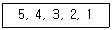
- 4, 5, 3, 2, 1
- 1, 4, 3, 2, 5
- 1, 5, 4, 3, 2
- 4, 3, 2, 1, 5
(정답률: 72%)
5. 릴레이션의 특징으로 옳지 않은 것은?
- 모든 튜플은 서로 다른 값을 갖는다.
- 하나의 릴레이션 내에서 튜플의 순서는 존재한다.
- 각 속성은 릴레이션 내에서 유일한 이름을 가진다.
- 모든 속성 값은 원자 값이다.
(정답률: 80%)
6. 데이터베이스는 서로 다른 목적을 가진 여러 응용자들을 위한것이기 때문에 다수의 사용자가 동시에 데이터베이스에 접근하여 이용할 수 있어야 한다는 데이터베이스의 특성은?
- Time Accessibilty
- Contionuous Evolution
- Concurrent Sharing
- Content Reference
(정답률: 76%)
7. 다음 설명의 괄호 안 내용으로 옳게 짝지어진 것은?
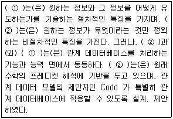
- ① 관계형 데이터 모델, ② 계층형 데이터 모델
- ① 계층형 데이터 모델, ② 관계형 데이터 모델
- ① 관계 대수, ② 관계 해석
- ① 관계 해석, ② 관계 대수
(정답률: 74%)
8. 한 릴레이션의 기본 키를 구성하는 어떠한 속성 값도 널(Null) 값이나 중복 값을 가질 수 없음을 의미하는 무결성의 종류는?
- 개체 무결성
- 참조 무결성
- 도메인 무결성
- 키 무결성
(정답률: 71%)
9. 시스템 카탈로그에 대한 설명으로 옳지 않은 것은?
- 사용자가 직접 시스템 카탈로그 내용을 갱신하여 데이터베이스 무결성을 유지한다.
- 시스템 자신이 필요로 하는 스키마 및 여러가지 객체에 관한 정보를 포함하고 있는 시스템 데이터베이스이다.
- 시스템 카탈로그에 저장되는 내용을 메타 데이터라고도 한다.
- 시스템 카탈로그 DBMS가 스스로 생성하고 유지한다.
(정답률: 79%)
10. 어떤 릴레이션 R에서 X와 Y를 각각 R의 속성 집합의 부분집합이라고 할 경우 속성 X의 값 각각에 대해 시간에 관계없이 항상 속성 Y의 값이 오직 하나만 연관되어 있을 때 Y는 X에 함수적 종속이라고 한다. 이를 기호로 옳게 표기한 것은?
- X >> Y
- Y >> X
- Y → X
- X → Y
(정답률: 69%)
11. 분산 데이터베이스에 대한 설명으로 거리가 먼 것은?
- 지역자치성이 높다.
- 효용성과 융통성이 높다.
- 분산 제어가 가능하다.
- 소프트웨어 개발 비용이 저렴하다.
(정답률: 84%)
12. 트랜잭션의 연산은 데이터베이스에 모두 반영되든지 아니면 전혀 반영되지 않아야 한다는 트랜잭션의 특징은?
- Consistency
- Isolation
- Atomicity
- Durability
(정답률: 69%)
13. 다음 그림에서 트리의 Degree와 터미널 노드의 수는?
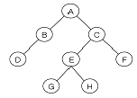
- 트리의 Degree : 4, 터미널 노드 : 4
- 트리의 Degree : 2, 터미널 노드 : 4
- 트리의 Degree : 4, 터미널 노드 : 8
- 트리의 Degree : 2, 터미널 노드 : 8
(정답률: 72%)
14. DDL에 해당하는 SQL 명령으로만 짝지어진 것은?
- SELECT, ALTER, UPDATE
- INSERT, CREATE, DELETE
- DELETE, DROP, ALTER
- DROP, ALTER, CREATE
(정답률: 77%)
15. 다음은 무엇에 대한 설명인가?
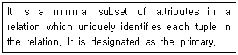
- Super Key
- Foreign Key
- Alternative Key
- Candidate Key
(정답률: 55%)
16. 다음은 무엇에 대한 설명인가?
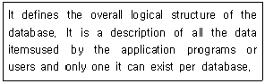
- Internal Schema
- External Schema
- Foreign Schema
- Conceptual Schema
(정답률: 55%)
17. 데이터베이스의 물리적 설계에서 옵션 선택시 고려사항에 해당하는 내용 모두를 옳게 나열한 것은?
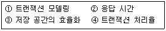
- ①, ②, ③
- ②, ③, ④
- ①, ③
- ①, ②, ③, ④
(정답률: 58%)
18. 병행제어의 목적으로 옳은 내용 모두를 나열한 것은?
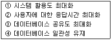
- ①, ②, ③
- ②, ③, ④
- ①, ②, ③, ④
- ①, ③, ④
(정답률: 77%)
19. 다음 트리를 전위 순회(Preorder Traversal)한 결과는?
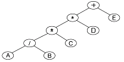
- +**/ABCDE
- A/B*C*D+E
- +*AB/*CDE
- AB/C*D*E+
(정답률: 75%)
20. 색인 순차 파일에 대한 설명으로 옳지 않은 것은?
- 순차 처리와 직접 처리가 모두 가능하다.
- 레코드의 삽입, 삭제, 갱신이 용이하다.
- 인덱스를 이용하여 해당 데이터 레코드에 접근하기 때문에 처리 속도가 랜덤 편성 파일보다 느리다.
- 인덱스를 저장하기 위한 공간과 오버플로우 처리를 위한 별도의 공간이 필요 없다.
(정답률: 62%)
2과목: 전자 계산기 구조
21. 다음은 어떤 마이크로 명령에 의해서 수행되는 경우인가?
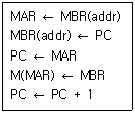
- BSA 명령
- STA 명령
- ISZ 명령
- ADD 명령
(정답률: 39%)
22. 메모리 버퍼 레지스터(MBR)의 설명으로 옳은 것은?
- 다음에 실행할 명령어의 번지를 기억하는 레지스터
- 현재 실행 중인 명령의 내용을 기억하는 레지스터
- 기억장치를 출입하는 데이터가 일시적으로 저장하는 버퍼 레지스터
- 기억장치를 출입하는 데이터의 번지를 기억하는 레지스터
(정답률: 57%)
23. 인스트럭션 실행과정에서 한 단계씩 이루어지는 동작은?
- micro operation
- fetch
- control routine
- automation
(정답률: 53%)
24. 다음의 상태도(state diagram)에 맞는 상태표(state table)는? (단, 상태를 A, 입력은 x, 출력은 y라 한다.)
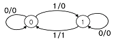
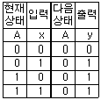
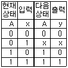
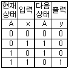
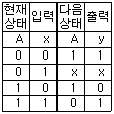
(정답률: 51%)
25. 2의 보수 표현이 1의 보수 표현보다 더 널리 사용되고 있는 주요 이유는?
- 음수 표현이 가능하다.
- 10진수 변환이 더 용이하다.
- 보수 변환이 더 편리하다.
- 덧셈 연산이 더 간단하다.
(정답률: 45%)
26. 사용자 프로그램에 할당된 영역이 EC00h - FFFFh 일 경우 사용 가능한 크기는 모두 몇 KByte인가?
- 3KByte
- 4KByte
- 5KByte
- 6KByte
(정답률: 42%)
27. 대칭적 다중프로세서(SMP)에 대한 설명으로 틀린 것은?
- 능력이 비슷한 프로세서들로 구성됨
- 모든 프로세서들은 동등한 권한을 가짐
- 노드들 간의 통신은 message-passing 방식을 이용함
- 프로세서들이 기억장치와 I/O 장치들을 공유함
(정답률: 44%)
28. 중앙처리장치가 주기억장치보다 더 빠르기 때문에 프로그램 실행 속도를 중앙처리장치의 속도에 근접하도록 하기 위해서 사용되는 기억장치는?
- 가상 기억 장치
- 모듈 기억 장치
- 보조 기억 장치
- 캐시 기억 장치
(정답률: 70%)
29. 인터럽트를 발생시키는 모든 장치들을 인터럽트의 우선순위에 따라 직렬로 연결함으로써 이루어지는 우선순위 인터럽트 처리방법은?
- handshaking
- daisy-chain
- DMA
- polling
(정답률: 54%)
30. 캐시기억장치에서 적중률이 낮아질 수 있는 매핑 방법은?
- 연관 매핑
- 세트-연관 매핑
- 간접 매핑
- 직접 매핑
(정답률: 47%)
31. 인스트럭션 세트의 효율성을 높이기 위하여 고려할 사항이 아닌 것은?
- 기억 공간
- 레지스터의 종류
- 사용빈도
- 주소지정 방식
(정답률: 46%)
32. 논리식 F = A + A 'B를 간소화한 식으로 옳은 것은?
- F = A'·B
- F = A·B'
- F = A·B
- F = A + B
(정답률: 42%)
33. F(x, y, z) = Σ(1, 3, 4, 5, 7)를 간단히 나타내면?
- F = x + y + z
- F = x·y' + Z
- F = x·y·z
- F = x + y·z
(정답률: 46%)
34. 인터럽트와 트랩을 비교 설명한 것 중 옳지 않은 것은?
- 트랩의 발생 시점은 동일한 입력에 대해서 일정하다.
- 인터럽트 발생에 대한 처리는 인터럽트 처리기(interrupt handler)가 담당한다.
- 인터럽트의 필요성은 CPU 실행과 입출력의 순차적인 실행에 있다.
- 인터럽트를 발생시킨 입출력 장치를 확인하는 방법으로는 폴링과 벡터를 사용한다.
(정답률: 42%)
35. 인스트럭션이 수행될 때 주기억장치에 접근하려면 인스트럭션에서 사용한 주소는 주기억장치에 직접 적용될 수 있는 기억장소의 주소로 변환되어야 한다. 이때 주소로부터 기억 장소로의 변환에 사용되는 것은?
- 사상 함수
- DMA
- 캐시 메모리
- 인터럽트
(정답률: 47%)
36. 연산자 기능에 대한 명령어를 나타낸 것 중 옳지 않은 것은?
- 함수 연산 기능 : ROL, ROR
- 전달 기능 : CPA, CLc
- 제어 기능 : JMP, SMA
- 입출력 기능 : INP, OUT
(정답률: 47%)
37. 인스트럭션 수행시 유효 주소를 구하기 위한 메이저 상태는?
- FETCH 상태
- EXECUTE 상태
- INDIRECT 상태
- INTERRUPT 상태
(정답률: 46%)
38. 플립플롭이 가지고 있는 기능은?
- Gate 기능
- 기억 기능
- 증폭 기능
- 전원 기능
(정답률: 63%)
39. 가상(virtual) 기억 장치에 대한 설명이 아닌 것은?
- 주목적은 컴퓨터의 속도를 향상시키기 위한 방법이다.
- 주기억장치를 확장한 것과 같은 효과를 제공한다.
- 실제로는 보조기억장치를 사용하는 방법이다.
- 사용자가 프로그램 크기에 제한 받지 않고 실행이 가능하다.
(정답률: 54%)
40. 동기고정식 마이크로 오퍼레이션 제어의 특성이 아닌 것은?
- 제어장치의 구현이 간단하다.
- 여러 종류의 마이크로 오퍼레이션 수행시 CPU사이클 타임이 실제적인 오퍼레이션 시간보다 길다.
- 마이크로 오퍼레이션들의 수행 시간의 차이가 큰 경우에 적합한 제어이다.
- 중앙처리장치의 시간이용이 비효율적이다.
(정답률: 48%)
3과목: 운영체제
41. 운영체제의 목적으로 거리가 먼 것은?
- 응답시간 단축
- 반환시간 증대
- 신뢰도 향상
- 처리량 향상
(정답률: 76%)
42. 분산 운영체제의 목적으로 거리가 먼 것은?
- 자원 공유
- 연산속도 향상
- 신뢰성 증대
- 보안성 향상
(정답률: 70%)
43. 디스크 스케줄링 기법 중 다음 설명에 해당하는 것은?
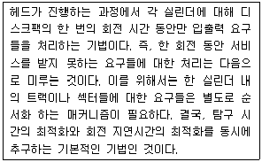
- SSTF 스케줄링
- Eschenbach 스케줄링
- FCFS 스케줄링
- N-SCAN 스케줄링
(정답률: 39%)
44. FIFO 교체 알고리즘을 사용하고 페이지 참조의 순서가 다음과 같다고 가정한다면 할당된 프레임의 수가 4개일 때 몇 번의 페이지 부재가 발생하는가? (단, 초기 프레임은 모두 비어 있다고 가정한다.)
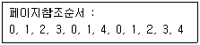
- 7
- 8
- 9
- 10
(정답률: 50%)
45. 구역성(Locality)에 관한 설명으로 옳지 않은 것은?
- Denning에 의해 증명된 이론으로 어떤 프로그램의 참조 영역은 지역화 된다는 것이다.
- 워킹 셋(Working Set) 이론의 바탕이 되었다.
- 시간구역성은 어떤 프로세스가 최근에 참조한 기억장소의 특정 부분은 그 후에도 계속 참조할 가능성이 높음을 의미한다.
- 부프로그램이나 서브루틴, 순환 구조를 가진 루틴, 스택 등의 프로그램 구조나 자료 구조는 공간구역성의 특성을 갖는다.
(정답률: 45%)
46. UNIX 파일시스템에서 각 파일이나 디렉토리에 대한 모든 정보를 저장하고 있는 블록은?
- 부트 블록
- 슈퍼 블록
- 데이터 블록
- I-node 블록
(정답률: 58%)
47. 빈 기억공간의 크기가 20K, 16K, 8K, 40K 일 때 기억장치 배치 전략으로 "Worst Fit"을 사용하여 17K의 프로그램을 적재할 경우 내부 단편화의 크기는?
- 3K
- 23K
- 44K
- 67K
(정답률: 70%)
48. UNIX 운영체제의 특징과 가장 거리가 먼 것은?
- 높은 이식성
- 사용자 위주의 시스템 명령어 제공
- 쉘 명령어 프로그램 제공
- 파일 시스템의 리스트 구조
(정답률: 61%)
49. 스레드(Thread)에 대한 설명으로 옳지 않은 것은?
- 프로세스 내부에 포함되는 스레드는 공통적으로 접근 가능한 기억장치를 통해 효율적으로 통신한다.
- 다중 스레드 개념을 도입하면 자원의 중복 할당을 방지하고 훨씬 작은 자원만으로도 작업을 처리 할 수 있다.
- 하나의 프로세스를 구성하고 있는 여러 스레드들은 공통적인 제어 흐름을 가지며, 각종 레지스터 및 스택 공간들은 모드 스레드들이 공유한다.
- 하나의 프로세스를 여러 개의 스레드로 생성하여 병행성을 증진시킬 수 있다.
(정답률: 51%)
50. 파일디스크립터(File Descriptor)의 내용으로 거리가 먼 것은?
- 파일 수정 시간
- 파일의 이름
- 파일에 대한 접근 횟수
- 파일 오류 처리 방법
(정답률: 56%)
51. 운영체제가 수행하는 기능에 해당하지 않는 것은?
- 사용자들 간에 데이터를 공유할 수 있도록 한다.
- 사용자와 컴퓨터시스템 간의 인터페이스 기능을 제공한다.
- 자원의 스케줄링 기능을 제공한다.
- 목적 프로그램과 라이브러리 로드 모듈을 연결하여 실행 가능한 로드 모듈을 만든다.
(정답률: 64%)
52. 하이퍼큐브에서 하나의 프로세서에 연결되는 다른 프로세서의 수가 4개일 경우 필요한 총 프로세서 수는?
- 4
- 8
- 16
- 32
(정답률: 68%)
53. 다중 처리기 운영체제 형태 중 주/종(Master/Slave) 처리기에 대한 설명으로 옳지 않은 것은?
- 주 프로세서가 운영체제를 수행한다.
- 주 프로세서와 종 프로세서가 모두 입.출력을 수행하기 때문에 대칭 구조를 갖는다.
- 주 프로세서가 고장이 나면 시스템 전체가 다운된다.
- 하나의 프로세서를 주 프로세서로 지정하고, 다른 처리기들은 종 프로세서로 지정하는 구조이다.
(정답률: 71%)
54. 선점 기법과 대비하여 비선점 스케줄링 기법에 대한 설명으로 옳지 않은 것은?
- 모든 프로세스들에 대한 요구를 공정히 처리한다.
- 응답 시간의 예측이 용이하다.
- 많은 오버헤드(Overhead)를 초래할 수 있다.
- CPU의 사용 시간이 짧은 프로세스들이 사용 시간이 긴 프로세스들로 인하여 오래 기다리는 경우가 발생할 수 있다.
(정답률: 35%)
55. 은행원 알고리즘은 교착상태 해결 방법 중 어떤 기법에 해당하는가?
- Prevention
- Recovery
- Avoidance
- Detection
(정답률: 63%)
56. 현재 헤드의 위치가 50에 있으며, 디스크 대기 큐에 다음과 같은 순서의 액세스 요청이 대기 중 일 때 C-SCAN 기법을 사용한다면 제일 먼저 서비스 받는 트랙은?
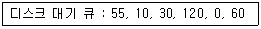
- 10
- 30
- 55
- 120
(정답률: 37%)
57. 다음 설명의 ( ) 안 내용으로 가장 적합한 것은?
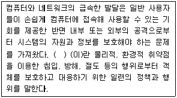
- 보증
- 제어
- 암호
- 보안
(정답률: 76%)
58. UNIX에서 파일의 사용 허가를 정하는 명령은?
- cp
- chmod
- cat
- Is
(정답률: 70%)
59. 여러 사용자들이 공유하고자 하는 파일들을 하나의 디렉토리 또는 일부 서브트리에 저장해 놓고 여러 사용자들이 이를 같이 사용할 수 있도록 지원하기 위한 가장 효율적인 디렉토리 구조는?
- 비순환 그래프 디렉토리 구조
- 트리 디렉토리 구조
- 1단계 디렉토리 구조
- 2단계 디렉토리 구조
(정답률: 37%)
60. 상호배제(Mutual Exclusion) 기법을 사용하여 임계영역(Critical Region)을 보호하였다. 다음 설명 중 옳지 않은 것은?
- 어떤 프로세스가 임계영역 내의 명령어 실행 중 인터럽트(Interrupt)가 발생하면 이 프로세스는 실행을 멈추고, 다른 프로세스가 이 임계영역 내의 명령어를 실행한다.
- 임계영역 내의 프로그램 수행 중에 교착상태(Deadlock)가 발생하면 교착상태가 해제될 때 까지 임계영역을 벗어 날 수 없다. 따라서 임계영역 내의 프로그램에서는 교착상태가 발생하지 않도록 해야한다.
- 임계영역 내의 프로그램에서 무한반복(Endless Loop)이 발생하면 임계영역을 탈출할 수 없다. 따라서 임계영역내의 프로그램에서는 무한반복이 발생하지 않도록 해야 한다.
- 여러 프로세스들 중에 하나의 프로세스만이 임계영역을 사용할 수 있도록 하여 임계영역에서 공유 변수 값의 무결성을 보장한다.
(정답률: 45%)
4과목: 소프트웨어 공학
61. 소프트웨어 위기를 가져온 원인에 해당하지 않는 것은?
- 소프트웨어 규모 증대와 복잡도에 따른 개발 비용 증가
- 프로젝트 관리기술의 부재
- 소프트웨어 개발기술에 대한 훈련 부족
- 소프트웨어 수요의 감소
(정답률: 62%)
62. 소프트웨어 위험의 대표적 특성으로 가장 적합한 것은?
- 연쇄작용, 확실성
- 불확실성, 손실
- 연쇄작용, 예측
- 확실성, 예측
(정답률: 70%)
63. FTR(Formal Technical Review)의 목적이 아닌 것은?
- 소프트웨어가 다양한 방식으로 개발되도록 한다.
- 소프트웨어가 요구 사항들과 일치하는지를 검증한다.
- 소프트웨어의 표현에 대한 기능, 논리적 오류를 발견한다.
- 소프트웨어가 미리 정한 기준에 따라 표현 되었는가를 확인한다.
(정답률: 52%)
64. 자료 사전에서 기호 "{ }" 의 의미는?
- 정의
- 생략
- 반복
- 선택
(정답률: 64%)
65. CPM 네트워크가 다음과 같은 때 임계경로의 소요기일은?
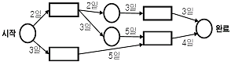
- 10일
- 12일
- 14일
- 16일
(정답률: 57%)
66. 소프트웨어의 전통적 개발 단계 중 요구분석 단계에 대한 설명으로 옳지 않은 것은?
- 프로젝트를 이해할 수 있는 개발의 실질적인 첫 단계이다.
- 현재의 상태를 파악하고 문제를 정의한 후, 문제해결과 목표를 명확히 도출하는 단계이다.
- 소프트웨어가 가져야 될 기능을 기술하는 단계이다.
- 고품질의 소프트웨어를 개발하기 위해 소프트웨어의 내부구조를 기술하는 단계이다.
(정답률: 53%)
67. 럼바우의 OMT 기법에서 자료 흐름도와 가장 밀접한 관계가 있는 것은?
- 객체 모델링
- 기능 모델링
- 동적 모델링
- 상속 모델링
(정답률: 49%)
68. 유지보수의 종류 중 소프트웨어를 운용하는 환경 변화에 대응하여 소프트웨어를 변경하는 경우로써 운영체제나 컴파일러와 같은 프로그래밍 환경의 변화와 주변장치 또는 다른 시스템 요소가 향상되거나 변경될 때 대처할 수 있는 것은?
- Corrective Maintenance
- Perfective Maintenance
- Preventive Maintenance
- Adaptive Maintenance
(정답률: 58%)
69. 재공학(Reengineering) 활동으로 볼 수 없는 것은?
- Analysis
- Migration
- Reverse Engineering
- Reuse
(정답률: 50%)
70. 객체에서 어떤 행위를 하도록 지시하는 명령은?
- Class
- Instance
- Method
- Message
(정답률: 54%)
71. 소프트웨어의 재사용으로 인한 효과가 거리가 먼 것은?
- 개발기간의 단축
- 소프트웨어의 품질향상
- 개발 비용 감소
- 새로운 개발 방법 도입의 용이성
(정답률: 70%)
72. CASE에 대한 설명으로 옳지 않은 것은?
- 자동 검사를 통하여 소프트웨어 품질을 향상시킨다.
- 소프트웨어의 유지보수를 간편하게 수행할 수 있다.
- 보헴이 제안한 것으로 LOC에 의한 비용 산정 기법이다.
- 소프트웨어 부품의 재사용성이 향상된다.
(정답률: 58%)
73. 소프트웨어 생명 주기 모형 중 Spiral Model 에 대한 설명으로 옳지 않은 것은?
- 대규모 시스템에 적합하다.
- 초기에 위험 요소를 발견하지 못할 경우 위험 요소를 제거하기 위해 많은 비용이 소요될 수 있다.
- 소프트웨어를 개발하면서 발생할 수 있는 위험을 관리하고 최소화 하는 것을 목적으로 한다.
- 소프트웨어 개발 과정의 앞 단계가 끝나야만 다음단계로 넘어갈 수 있는 선형 순차적 모형이다.
(정답률: 51%)
74. 다음 중 소프트웨어 개발 영역을 결정하는 요소에 해당하는 항목 모두를 옳게 나열한 것은?
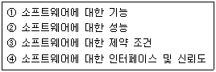
- ①, ②
- ①, ②, ③
- ①, ②, ④
- ①, ②, ③, ④
(정답률: 60%)
75. 블랙박스 검사 기법에 해당하는 것으로만 짝지어진 것은?
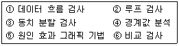
- ①, ③, ④, ⑤, ⑥
- ③, ④, ⑤, ⑥
- ①, ②
- ①, ②, ⑤, ⑥
(정답률: 61%)
76. 객체지향 분석 방법론 중 E-R 다이어그램을 사용하여 객체의 행위를 모델링하며, 객체 식별, 구조 식별, 주제 정의, 속성과 인스턴스 연결 정의, 연산과 메시지 연결 정의 등의 과정으로 구성되는 것은?
- Coda와 Yourdon 방법
- Booch 방법
- Jacobson 방법
- Wlrfs-Brock 방법
(정답률: 53%)
77. 자료흐름도(DFD)의 각 요소별 표기 형태의 연결이 옳지 않은 것은?
- Process-원
- Data Flow-화살표
- Data Store-삼각형
- Terminator-사각형
(정답률: 65%)
78. 바람직한 설계 지침이 아닌 것은?
- 모듈의 기능을 예측할 수 있도록 정의한다.
- 두 모듈간의 상호 의존도를 강하게 한다.
- 이식성을 고려한다.
- 적당한 모듈의 크기를 유지한다.
(정답률: 72%)
79. 최종 사용자가 여러 장소의 고객 위치에서 소프트웨어에 대한 검사를 수행하는 검증 검사 기법의 종류는?
- 베타 검사
- 알파 검사
- 형상 검사
- 복구 검사
(정답률: 65%)
80. 소프트웨어 품질 목표 중 사용자의 요구 기능을 충족시키는 정도를 의미하는 것은?
- Correctness
- Integrity
- Flexibility
- Portability
(정답률: 47%)
5과목: 데이터 통신
81. 하나 또는 그 이상의 터미널에 정보를 전송하기 위한 데이터링크 확립 방법 중 폴링(polling) 방법에 관한 설명으로 옳은 것은?
- 주 스테이션이 특정한 부 스테이션에게 데이터를 전송할 경우 데이터를 받을 준비가 되어있는지를 확인하는 방식이다.
- 주 스테이션이 각 부 스테이션에게 데이터 전송을 요구하는 방식이다.
- 하나의 터미널을 선택하여 수신 준비 여부를 문의한 후에 데이터를 전송한다.
- 하나의 터미널을 선택하여 수신 여부를 확인하지 않고 그대로 데이터를 전송한다.
(정답률: 33%)
82. DNS(Domain Name System) 메시지 구조중 헤더에 포함되어 있는 플래그 필드는 여덟 개의 서브 필드로 구성되어 잇다. 다음 설명에 해당되는 서브 필드는?
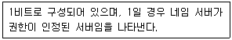
- QR
- RA
- AA
- RD
(정답률: 38%)
83. 에러(error) 정정이 가능한 코드는?
- Hamming 코드
- CRC 코드
- ASCII 코드
- EBCDIC 코드
(정답률: 65%)
84. IETF에서 고안한 IPv4에서 IPv6로 전환(천이)하는데 사용되는 전략이 아닌 것은?
- Dual stack
- Tunneling
- Header translation
- Source routing
(정답률: 52%)
85. 다음이 설명하고 있는 데이터 링크 제어 프로토콜은?
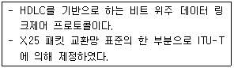
- PPP
- ADCCP
- LAP-B
- SDLC
(정답률: 50%)
86. TCP/IP 관련 프로토콜 중 응용계층에 해당하지 않는 것은?
- ARP
- DNS
- SMTP
- HTTP
(정답률: 48%)
87. 패킷 교환망에 접속되는 단말기 중 비패킷형 단말기(Non-Packet Mode Terminal)에서 패킷의 조립.분해 기능을 제공해 주는 일종의 어댑터는?
- GFI
- PTI
- SVC
- PAD
(정답률: 51%)
88. 수신측에서 수신된 데이터에 대한 확인(Acknowledgement)을 즉시 보내지 않고 전송할 데이터가 있는 경우에만 제어 프레임을 별도로 사용하지 않고 기존의 데이터 프레임에 확인 필드를 덧붙여 전송하는 흐름제어 방식은?
- Stop and Wait
- Sliding Window
- Piggyback
- Polling
(정답률: 46%)
89. 회선교환(circuit switching)에 대한 설명으로 옳지 않은 것은?
- 송신스테이션과 수신스테이션 사이에 데이터를 전송하기 전에 먼저 교환기 통해 물리적으로 연결이 이루어져야 한다.
- 음성이나 동영상과 같이 연속적이면서 실시간 전송이 요구되는 멀티미디어 전송 및 에러제어와 복구에 적합하다.
- 현재 널리 사용되고 있는 전화시스템을 대표적인 예로 들 수 있다.
- 송신과 수신스테이션 간에 호 설정이 이루어지고 나면 항상 정보를 연속적으로 전송할 수 있는 전용 통신로가 제공되는 셈이다.
(정답률: 58%)
90. 패킷 교환 기술의 데이터 그램 전송방식과 가상 회선 전송방식의 차이점으로 옳은 것은?
- 전송데이터를 패킷단위로 구분
- 목적지 노드에서 패킷들의 순서를 재구성
- 패킷 교환기 사용
- 데이터 단말장비(DTE) 사용
(정답률: 44%)
91. 아날로그 데이터를 디지털 신호로 변환하는 과정에 포함되지 않는 것은?
- 표본화
- 분산화
- 부호화
- 양자화
(정답률: 66%)
92. HDLC에서 비트 스터핑(Bit Stuffing)의 수행 목적으로 옳은 것은?
- 프레임의 시작과 끝을 알려준다.
- 데이터 전송과정에서의 오류를 검사한다.
- 데이터의 투명성을 보장한다.
- 송신부와 수신부 사이의 흐름을 유지한다.
(정답률: 38%)
93. RTCP(Real-Time Control Protocol)의 특징으로 옳지 않은 것은?
- Session의 모든 참여자에게 컨트롤 패킷을 주기적으로 전송한다.
- RTCP 패킷은 항상 16비트의 경계로 끝난다.
- 하위 프로토콜은 데이터 패킷과 컨트롤 패킷의 멀티 플렉싱을 제공한다.
- 데이터 전송을 모니터링하고 최소한의 제어와 인증 기능을 제공한다.
(정답률: 53%)
94. 데이터 통신에서 동기전송방식에 대한 설명으로 틀린 것은?
- 문자 또는 비트들의 데이터 블록을 송/수신한다.
- 전송데이터와 제어정보를 합쳐서 레코드라 한다.
- 수신기가 데이터 블록의 시작과 끝은 정확히 인식하기 위한 프레임 레벨의 동기화가 요구된다.
- 문자위주와 비트위주 동기식 전송으로 구분된다.
(정답률: 43%)
95. PCM(Pulse Code Modulation)에 대한 설명으로 옳지 않은 것은?
- PCM은 음성 정보와 같은 아날로그 정보를 디지털 신호로 변환하기 위해 널리 사용되는 방식이다.
- 입력 아날로그 데이터를 일정한 주기마다 표본화하여 PAM(Pulse Ampitude Modulation) 펄스로 만든다.
- Frequency Modulation을 사용하여 변조한다.
- 300~3400Hz 범위에 대부분의 주파수 성분을 가지는 음성 정보의 경우, 표본화 주파수를 8000Hz로 하면 원래의 음성 정보를 손실 없이 유지할 수 있다.
(정답률: 41%)
96. LAN의 매체 접근 제어 방식에 해당하지 않는 것은?
- CSMA/CD
- Token Ring
- Token Bus
- Logical Link Control
(정답률: 57%)
97. 네트워크를 통해 데이터 전송시 사용되는 암호화 기법 중 암호화 할 때 하나의 키를 사용하고 해독과정에서 또 다른 키를 사용하는 것은?
- DES
- RSA
- SEED
- RC2
(정답률: 53%)
98. 다중화 방식에 대한 설명으로 옳지 않은 것은?(실제 시험장에서는 옳은것은이라고 하여 문제가 잘못출제되어 가,나, 라번이 정답처리 되었습니다. 여기서는 옳지 않은것이라고 교정하여 다번을 정답 처리 합니다.)
- 주파수 분할 다중화는 여러 신호를 전송매체의 서로 다른 주파수대역을 이용하여 동시에 전송하는 기술이다.
- 동기식 시분할 다중화는 전송시간을 일정한 간격의 시간 슬롯으로 나누고, 이를 주기적으로 각 채널에 할당한다.
- 통계적 시분할 다중화는 전송 프레임마다 각 시간슬롯이 해당 채널에게 고정적으로 할당된다.
- 파장분할 다중화는 광 영역에서의 주파수 분할 다중화로 볼 수 있다.
(정답률: 62%)
99. 다음 설명은 OSI 7 계층 중 어느 계층에 속하는가?
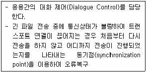
- 데이터링크계층
- 네트워크계층
- 세션계층
- 표현계층
(정답률: 49%)
100. 데이터 링크 제어 프로토콜 중 PPP에서 링크의 연결을 설정, 유지 및 해제를 위해 사용되는 프로토콜은?
- LLC
- LCP
- CRC
- SDH
(정답률: 30%)